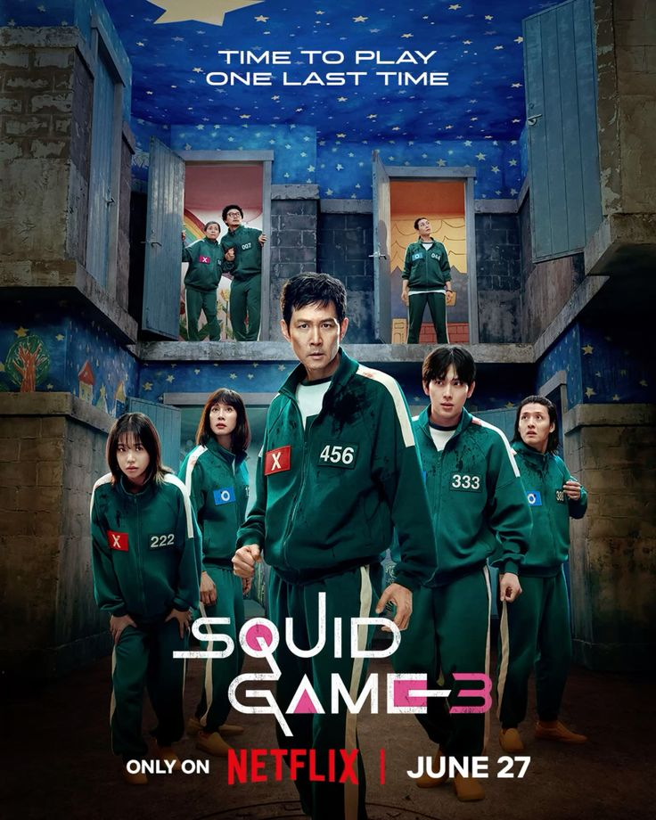

Squid Game Season 3 has left fans divided. While some praised its intense storyline, powerful performances, and emotional depth, others criticized the rushed pacing and controversial scenes—especially the unrealistic childbirth moment that sparked major backlash. Visually stunning but narratively uneven, this season feels bold yet messy. For some, it's a haunting finale; for others, a disappointing end to a once-groundbreaking series.
Your Opinon?